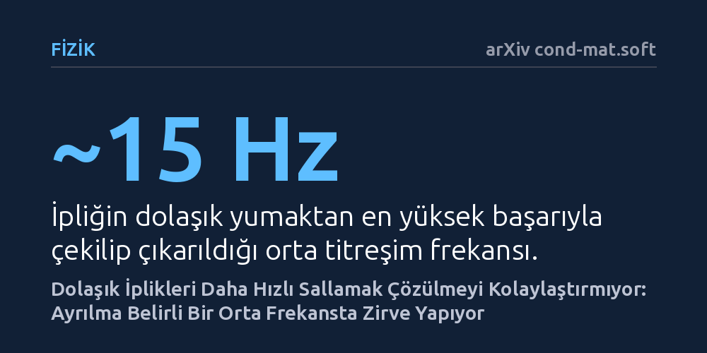

FIZIK · arXiv cond-mat.soft · 2026-10-16
Araştırmacılar, birbirine dolanmış iplik yumaklarından tek bir lifi dikey sallayarak çıkarmanın dinamiklerini ve arkasındaki mekanizmayı inceledi. Daha hızlı sallamanın çözülmeyi kolaylaştırmadığını, ipliğin yumağın içinden yalnızca yaklaşık 15 Hertz civarındaki belirli bir ara frekansta ayrılabildiğini buldular.
Dolaşmış bir yapıyı çözmek için kuvveti veya hızı körlemesine artırmak yerine, malzemenin fiziksel darbe iletim hızına uygun ritmik bir zaman aralığı yakalamak gerektiğini gösteriyor.

Çekmecede birbirine geçmiş kulaklık kablolarından doğadaki canlı solucan yumaklarına kadar, esnek ve uzun liflerin birbiri içine dolanması günlük hayatın en tanıdık karmaşalarından biridir. Bu tür dolaşık yapılar, iplikler arasındaki sürtünme ve geometrik kilitlenmeler sayesinde dağılmadan bir arada durur. Genel sezgimiz, sıkışmış veya dolaşmış bir nesneyi serbest bırakmak için ne kadar şiddetli ve hızlı sarsarsak o kadar çabuk kurtulacağını söyler. Oysa fiziksel sistemler her zaman bu kaba kuvvete beklenen tepkiyi vermez.
Araştırmacılar, dolaşık bir yığının içinden tek bir ipliği çekip çıkarmak istediğimizde sallama hızının sürece nasıl etki ettiğini temel bir fizik problemi olarak ele aldı. Ortaya çıkan soru oldukça yalındı: Bir ipliği dikey olarak salladığımızda, yumağı bir arada tutan sürtünme kilidi hangi frekansta ve hangi kurallarla çözülür? Bu sorunun cevabı, yalnızca çekmecemizdeki kabloları değil, tekstil üretiminden biyolojik polimer ağlarının mekaniğine kadar pek çok alandaki dolaşıklık dinamiklerini anlamak açısından kritik bir önem taşıyor.
Bu mekanizmayı kontrollü bir şekilde incelemek amacıyla araştırmacılar iki farklı dolaşık sistem tasarladı. Bir yanda iç tutunma kuvveti ayarlanabilen düzensiz iplik yumakları, diğer yanda ise dikişlerle düzenli bir yapıya kavuşturulmuş ağlar kullanıldı. Her iki düzenek de tek bir taşıyıcı iplikten asıldı ve bu iplik sabit bir genlikte, yani belirli bir yukarı-aşağı mesafede dikey doğrultuda farklı frekanslarda titreştirildi.
Titreşim sırasında ipliğin ve yumağın verdiği anlık tepkiler yüksek hızlı video kayıtlarıyla milisaniye düzeyinde takip edildi. Deneylerden elde edilen verileri anlamlandırmak için fizikçiler, yalnızca çekme gerilimini hesaba katan basitleştirilmiş bir yay-kütle modeli geliştirdi. Bu matematiksel simülasyon, deneysel gözlemlerle birleştirilerek ipliğin gevşeme, gerilme ve kuvvet aktarma aşamalarını adım adım doğrulamak için kullanıldı.
Deneylerin en çarpıcı sonucu, sallama frekansı arttıkça ipliğin ayrılma veriminin doğrusal şekilde artmaması oldu. Titreşimin tepe ivmesi frekansın karesiyle katlanarak büyümesine rağmen, ipliğin yumaktan sıyrılıp çıkması yalnızca yaklaşık 15 Hertz civarındaki orta frekanslarda zirve yaptı ve daha yüksek frekanslara çıkıldığında hızla düşüşe geçti. Bu şaşırtıcı durum klasik bir rezonanstan ziyade, sisteme uygulanan kuvvet ile bu kuvvetin iletimi arasındaki hassas bir zamanlama uyumundan kaynaklanıyordu.
Araştırmacılar bu süreci belirleyen iki temel sınır tanımladı. Alt sınır, yerçekimini aşan ivmeyle ipin her döngüde bir anlığına boşalıp ardından kırbaç gibi aniden gerilerek çekme darbesi oluşturduğu gevşeme eşiğiydi. Üst sınır ise oluşturulan bu mekanik darbenin yumak boyunca yayılma süresinin döngünün dörtte birini aştığı iletim geçişiydi. Çok yüksek frekanslarda darbe henüz yumağın diğer ucuna ulaşamadan yeni bir döngü başlıyor, böylece yumak tek bir bütün gibi tepki veremeyerek dışarıdan verilen enerjiyi kendi içinde sönümlüyordu.
Elde edilen bulgular, dolaşık lifli yapıların sadece kaba kuvvetle değil, frekansa duyarlı yöntemlerle akıllıca parçalanabileceğini gösteriyor. Bir yumağı çözmek için alt eşik yalnızca yerçekimi ve tahrik parametrelerine bağlıyken, üst sınır tamamen yumağın boyutu ve içindeki kuvvet iletim hızına göre belirleniyor. İpliğin sistemden çekilebilmesi, yalnızca darbenin üretildiği an ile iletildiği zaman aralığının birbiriyle örtüştüğü bu özel frekans penceresinde mümkün oluyor.
Bu ilke, gelecekte tekstil geri dönüşümünde liflerin birbirine zarar vermeden ayrıştırılmasından, cerrahi operasyonlarda kullanılan biyolojik doku ve dikiş malzemelerinin davranışına kadar geniş bir alanda pratik karşılık bulabilir. Dolaşmış ipleri çözmenin sırrı daha sert veya daha hızlı çekmekte değil; sistemin fiziksel sınırlarına saygı duyan doğru ritmi yakalamakta yatıyor.